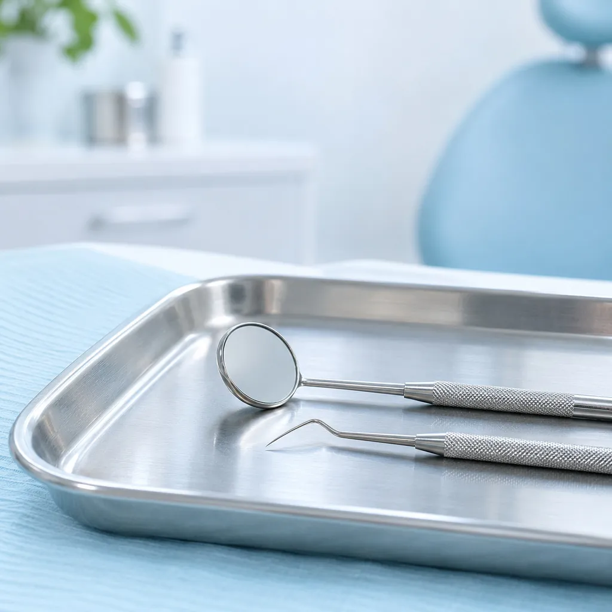
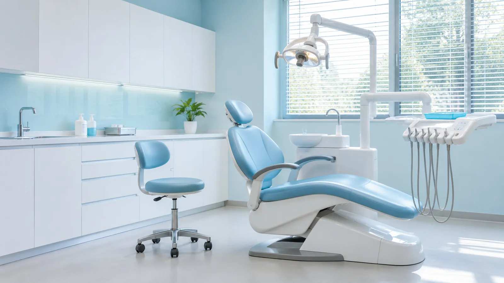
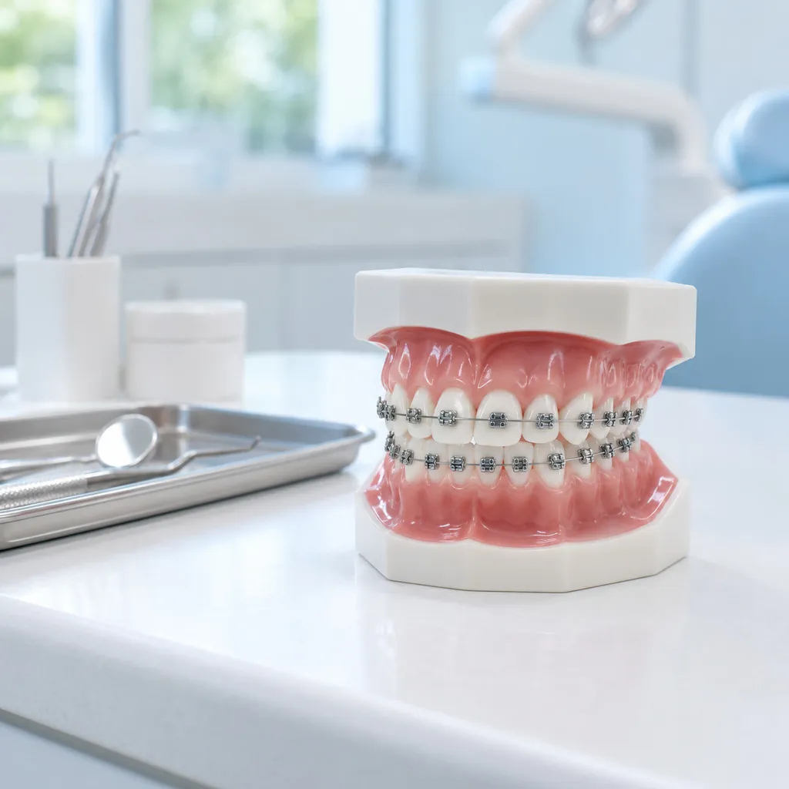
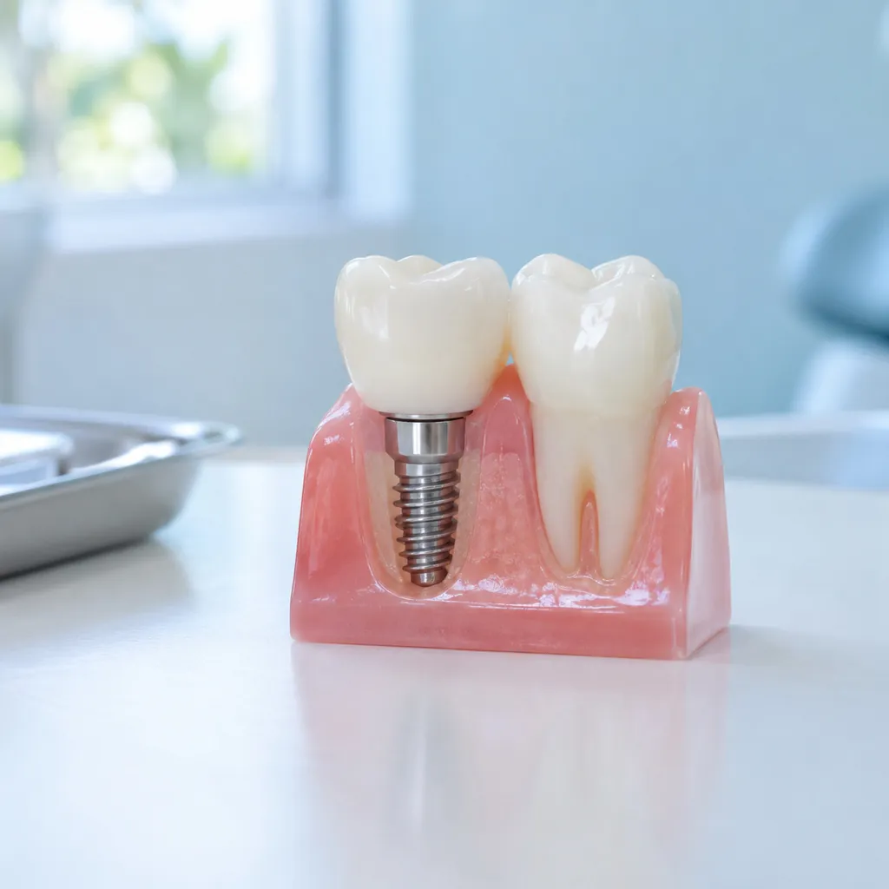
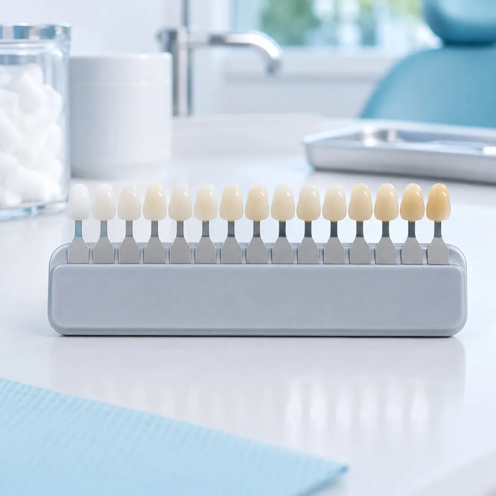
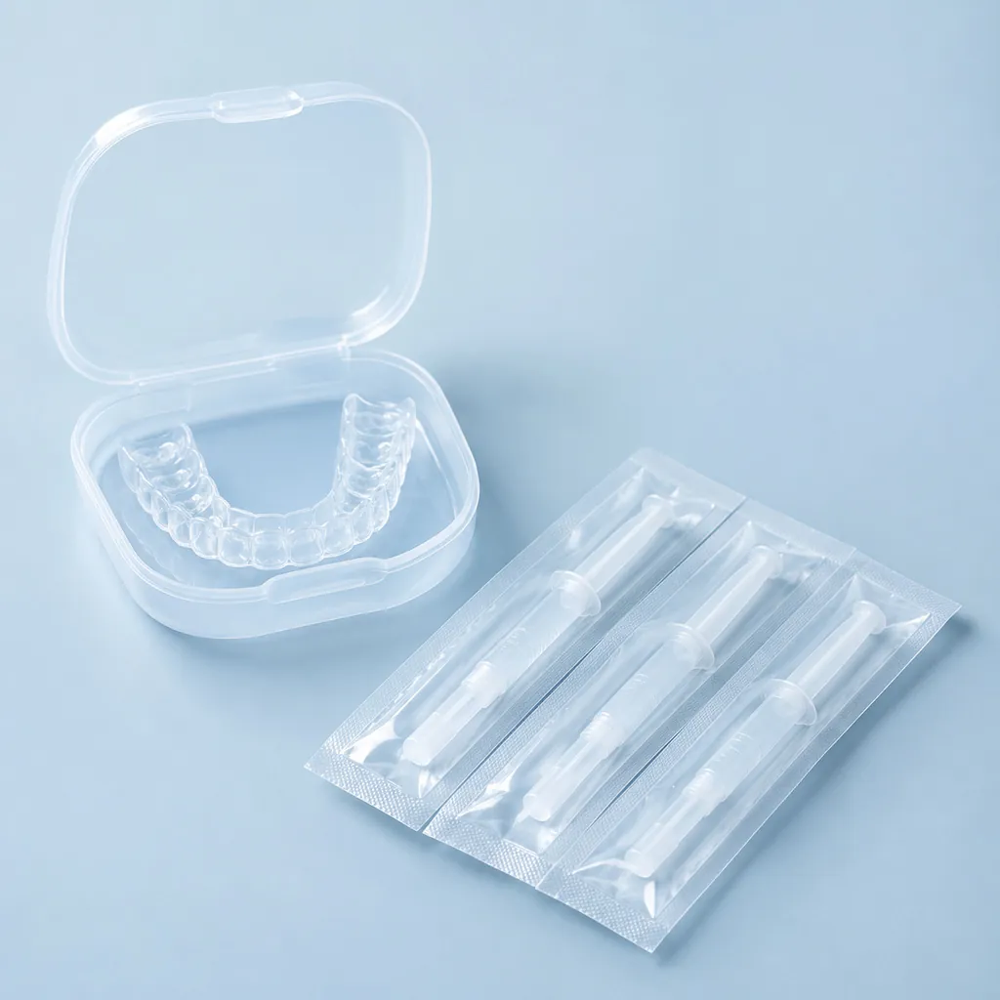
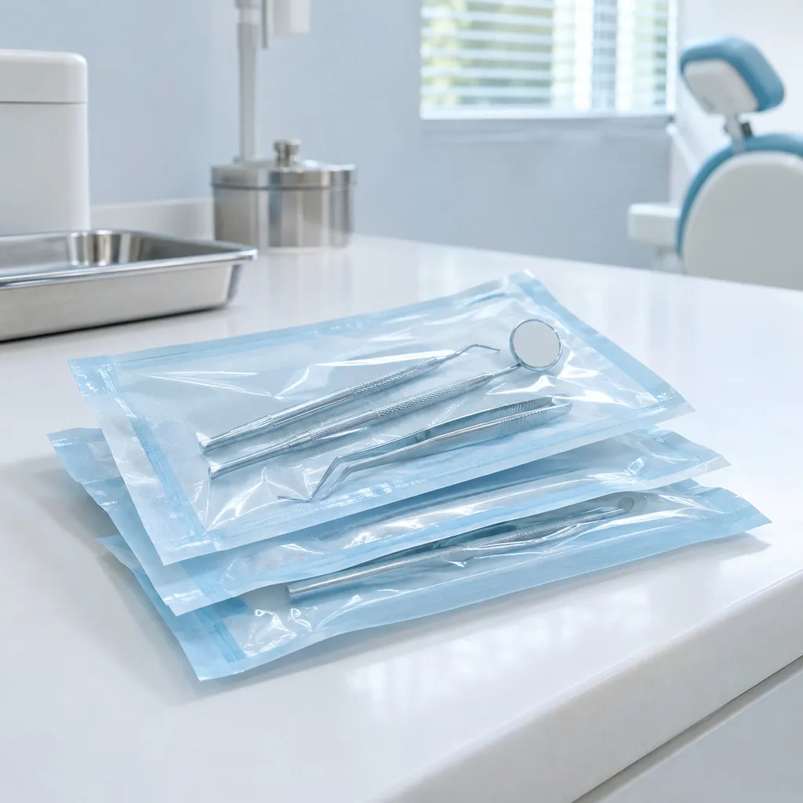

01 / 08
Odontología general
Controles, limpiezas y arreglo de caries. Es el punto de partida: revisamos tu boca y te explicamos qué conviene hacer primero.
Consultar por odontología general
Consultorio odontológico · Almagro, CABA
Odontología general, ortodoncia, implantes, estética dental y urgencias. Coordiná tu consulta por WhatsApp y te respondemos con día y horario.
Consultorioodontológico
Tocá un servicio para ver de qué se trata.

01 / 08
Controles, limpiezas y arreglo de caries. Es el punto de partida: revisamos tu boca y te explicamos qué conviene hacer primero.
Consultar por odontología general
02 / 08
Alineamos los dientes y corregimos la mordida con brackets. En la primera consulta vemos qué tratamiento te conviene.
Consultar por ortodoncia
03 / 08
Para reponer las piezas que faltan con una raíz de titanio y una corona fija. Te explicamos cada etapa antes de empezar.
Consultar por implantes
04 / 08
Carillas y coronas para mejorar la forma y el color de tus dientes. El tono lo elegimos junto con vos.
Consultar por estética dental
05 / 08
Para aclarar el color de los dientes. Antes de empezar revisamos tu boca y te contamos qué resultado podés esperar.
Consultar por blanqueamientos06 / 08
Tratamiento de las encías: sangrado, inflamación o retracción. Cuidar las encías es cuidar los dientes.
Consultar por periodoncia
07 / 08
Extracciones, muelas de juicio y otras cirugías bucales. Te explicamos el procedimiento y los cuidados de después.
Consultar por cirugíaUrgencias por WhatsApp
+54 9 11 3607-3049
08 / 08
¿Te duele una muela o se rompió un diente? Escribinos por WhatsApp contando qué pasó y coordinamos la atención lo antes posible.
Consultar por una urgenciaImágenes ilustrativas
Contanos qué te pasa o qué tratamiento te interesa. Si es una urgencia, decilo en el primer mensaje.
Te proponemos un turno y lo confirmamos por el mismo chat.
En Almagro. Si tenés dudas para llegar, te lo indicamos por WhatsApp.
Sí. Escribinos por WhatsApp contando qué pasó (dolor, un diente roto, una inflamación) y coordinamos la atención lo antes posible.
En la primera consulta revisamos tu boca, te explicamos las opciones y armamos juntos el plan de tratamiento.
Sí. Blanqueamientos, carillas y coronas son parte de la estética dental del consultorio. Escribinos y te contamos cómo es cada uno.
En Almagro, Ciudad de Buenos Aires. Escribinos por WhatsApp y te indicamos cómo llegar.
Escribinos por WhatsApp o dejá tu pedido en el formulario. Te respondemos con día y horario para tu turno.
+54 9 11 3607-3049Almagro, Ciudad de Buenos AiresDirección exacta a confirmar
Ubicación aproximada: el barrio de Almagro.